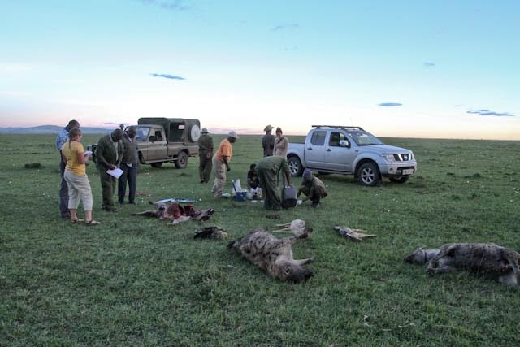
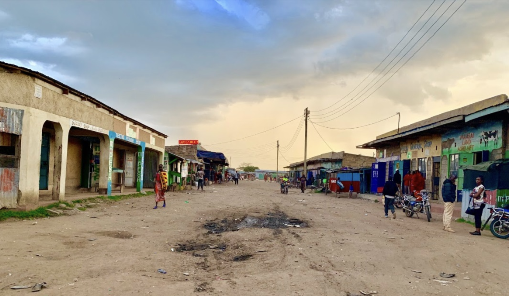
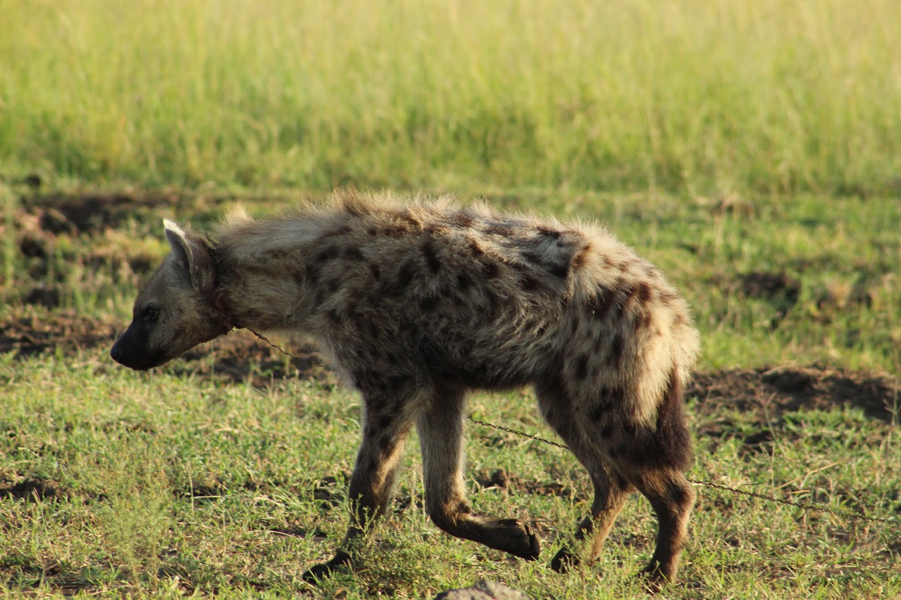
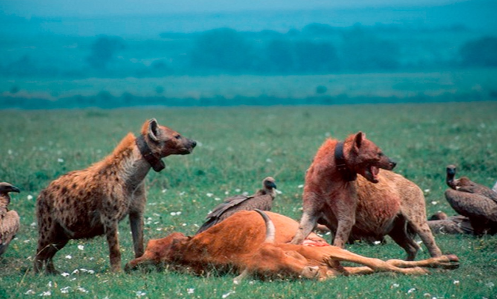
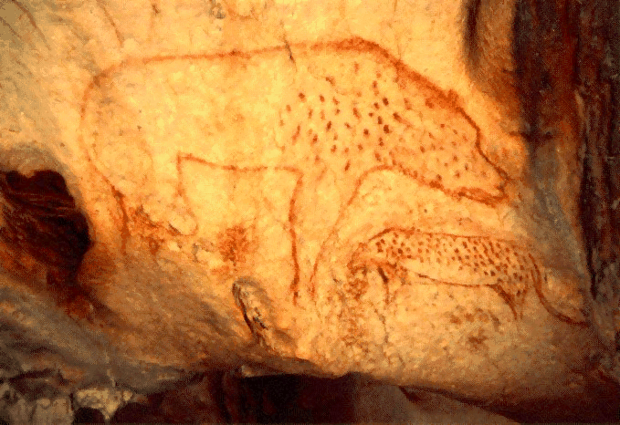
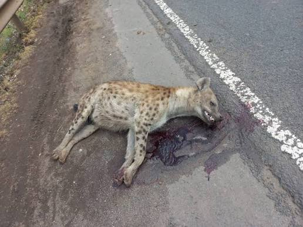
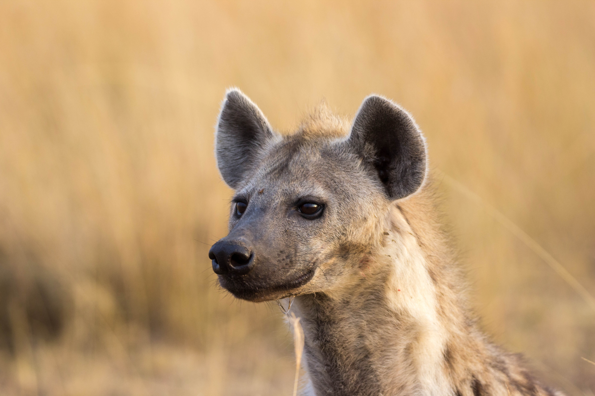

Threats to Hyenas
Spotted hyenas face a growing suite of threats despite their “Least Concern” IUCN status. Understanding these threats is the first step toward addressing them.
Conservation Status
The spotted hyena (Crocuta crocuta) is listed as Least Concern on the IUCN Red List, but this classification is misleading. Populations are declining across much of the species’ range, and fewer than 50,000 individuals are estimated to remain in the wild. Outside of protected areas, hyenas face intense persecution and rapidly shrinking habitat.
The IUCN’s most recent species action plan for spotted hyenas dates to 2014, leaving a significant knowledge gap about current distribution and population trends. The MHP’s long-term data contributes directly to filling this gap.
Estimated spotted hyenas remaining in the wild
Population Status
Of recorded mortality attributable to humans
Year of last IUCN spotted hyena action plan
Threats
Hyenas are shot, speared, trapped, and poisoned across their range, often inside protected areas. When hyenas prey on livestock, retaliatory killing is common and sometimes indiscriminate, wiping out entire clans through mass poisoning. This is the single largest documented threat to the species.

Expanding human settlements, agricultural encroachment, and road construction reduce and fragment hyena habitat. As wild habitat shrinks, hyenas are forced into closer contact with human communities, increasing conflict and persecution. The Maasai Mara region has seen significant land-use change over the MHP’s 35-year study period.

Wire snares set for bushmeat species kill hyenas as bycatch at alarming rates. In the Serengeti, snaring accounted for more than 50% of adult hyena mortality in some study periods. Snares are indiscriminate and largely invisible creating a serious and underappreciated threat.

As wildlife prey species decline, hyenas are forced to seek food closer to human settlements and livestock. This increases conflict, leading to more persecution, and creating a cycle that can rapidly destabilize hyena populations.

Hyena body parts are used in traditional medicine in parts of Africa and the Middle East. Cultural beliefs associating hyenas with witchcraft also drive persecution in some regions, requiring sustained education and community engagement to change.

Increasing road traffic through and around protected areas raises hyena mortality from vehicle collisions and also fragments habitat, restricting movement and isolating populations. This threat is growing as infrastructure development accelerates across East Africa.

Why It Matters
Spotted hyenas are keystone scavengers and predators in African savanna ecosystems. Their ecological role is substantial and often underappreciated:
Losing hyenas from an ecosystem does not just mean losing one species, it means losing the ecosystem services they provide to every other species around them, including humans.
